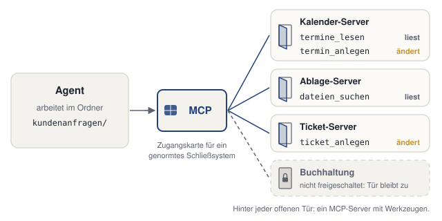

28 MCP: Zugänge zu anderen Systemen
Ein Agent im Projektordner kennt nur die Dateien in diesem Ordner. Der Terminwunsch vom 5. Oktober liegt als Datei in anfragen/, die freien Zeiten im Teamkalender liegen dort nicht. Damit der Agent sie trotzdem nachsehen kann, braucht er einen Zugang zum Kalender. MCP regelt solche Zugänge, und zwar genormt: Ein Agent, der MCP beherrscht, kann jedes System erreichen, das ebenfalls MCP anbietet.
In diesem Kapitel richten wir nichts ein. Wir fragen den eigenen Agenten, welche Zugänge er hat, und entscheiden, ob wir einen brauchen. Die Erklärung folgt jeweils am eigenen Ergebnis. Jeder Schritt hat denselben Aufbau: ein Auftrag zum Kopieren, ein Kasten „Das sollten wir jetzt sehen“, eine kurze Erklärung und ein Abschnitt „Wenn es anders aussieht“.
Voraussetzung: Der Ordner kundenanfragen ist in der App des Agenten geöffnet.
28.1 Schritt 1: Verbundene Server auflisten
Eine neue Sitzung starten.
Diesen Auftrag senden:
Nur lesen und auflisten, nichts ändern. Welche MCP-Server sind in dieser Umgebung verbunden, und welche Werkzeuge stellen sie bereit? Markiere je Werkzeug, ob es nur liest oder etwas ändert. Nichts ausführen, keine Zugangsdaten anzeigen.Prüfen: Die Antwort nennt Server mit Werkzeugen, oder sie stellt fest, dass keiner verbunden ist. Beide Ergebnisse sind gültig.
Prüfen: Bei jedem genannten Werkzeug steht, ob es nur liest oder etwas ändert.
28.1.1 Das sollten wir jetzt sehen
Eine von zwei Antworten. Namen und Zahl der Server hängen vom Werkzeug und den eigenen Einstellungen ab.
28.1.2 Was gerade passiert ist
Der Agent hat aufgelistet, welche Systeme außerhalb des Ordners er erreicht. MCP steht für Model Context Protocol. Ein Protokoll ist eine feste Vereinbarung, wie zwei Programme miteinander sprechen. MCP ist ein offener Standard, über den ein Agent Werkzeuge und Daten anderer Systeme nutzt: Dateien in einer Cloud-Ablage suchen, Termine lesen, Tickets anlegen. Für den Agenten als neuen Mitarbeiter sind das seine Zugänge zu anderen Systemen. MCP funktioniert dabei wie ein genormtes Schließsystem: Eine Karte öffnet viele Türen, aber nur die, für die sie freigeschaltet ist.
MCP-Server heißt das Programm hinter einer dieser Türen. Ein Server ist hier einfach ein Programm, das auf Anfragen antwortet; es kann auf dem eigenen Rechner laufen oder bei einem Anbieter im Internet. Der MCP-Server stellt Werkzeuge bereit (englisch Tools), die der Agent aufrufen darf. Ein Werkzeug ist eine einzelne Fähigkeit mit einem festen Namen, etwa termine_lesen. Hier hinkt der Vergleich von Karte und Tür: Der Agent betritt das andere System nicht, er ruft einzelne Werkzeuge auf und bekommt das Ergebnis zurück.

kundenanfragen drei freigeschaltete Server mit ihren Werkzeugen. Die Tür zur Buchhaltung bleibt zu.Jedes Werkzeug liest nur, oder es ändert etwas im anderen System. Deshalb haben wir diese Markierung verlangt. Für die Abbildung oben sieht das so aus:
| Server | Werkzeug | Was es tut | Art |
|---|---|---|---|
| Kalender | termine_lesen |
zeigt freie und belegte Zeiten | liest |
| Kalender | termin_anlegen |
trägt einen Termin ein | ändert |
| Ablage | dateien_suchen |
findet Dokumente in der Cloud-Ablage | liest |
| Ticket-System | ticket_anlegen |
legt ein Ticket im Service-System an | ändert |
Diese Unterscheidung entscheidet, wie vorsichtig wir einen Server behandeln. Ein lesendes Werkzeug kann im schlimmsten Fall etwas Falsches anzeigen. Ein änderndes Werkzeug legt echte Termine und echte Tickets an, die andere Menschen sehen.
MCP ist eine offene Spezifikation, die jeder Hersteller umsetzen darf. Seit Dezember 2025 gehört MCP zur Agentic AI Foundation der Linux Foundation, zusammen mit AGENTS.md. Die Anwendung, in der der Agent läuft, baut zu jedem Server eine eigene Verbindung auf. Ein Server kann neben Werkzeugen auch Daten (Resources) und vorbereitete Aufträge (Prompts) anbieten; für unsere Zwecke reichen die Werkzeuge. Spezifikation und Erklärungen: modelcontextprotocol.io, Aufbau im Detail: Architecture Overview.
- Kein Server verbunden: Das ist der häufigste Fall. Alles aus den bisherigen Kapiteln funktioniert ohne MCP-Server: Projektordner, AGENTS.md, Quellen, Eingang und Skills.
- Die Liste nennt auch Konnektoren oder Plugins: Hinter ihnen steckt oft ein MCP-Server. Mehr dazu im Kapitel Konnektoren und Plugins.
- Der Agent will ein Werkzeug zum Test aufrufen: ablehnen. Der Auftrag verlangt nur eine Liste.
- Die Antwort enthält ein Kennwort oder einen langen Schlüssel: ihn nirgendwohin kopieren und die Sitzung schließen. Im Unternehmen die IT fragen, ob der Schlüssel erneuert werden muss.
28.2 Schritt 2: Wo die Server eingetragen sind
Voraussetzung: Die Sitzung aus Schritt 1 ist offen.
Diese Frage senden:
Wo ist die Konfiguration der MCP-Server bei dir gespeichert? Nur den Pfad oder den Ort in den Einstellungen nennen, nichts öffnen.Prüfen: Der Agent nennt einen Pfad zu einer Datei oder einen Bereich in den Einstellungen.
Den genannten Ort mit der Übersicht nach Werkzeug vergleichen.
Prüfen: Der Ort passt zum eigenen Werkzeug in der Übersicht.
28.2.1 Das sollten wir jetzt sehen
Zwei typische Antworten in eigenen Worten. Der eigene Agent nennt den genauen Pfad oder den Namen des Bereichs in seiner App.
28.2.2 Was gerade passiert ist
Der Agent hat gesagt, wo seine Verbindungen eingetragen sind, ohne etwas zu öffnen. Manche Agenten lesen die Liste ihrer MCP-Server aus einer Konfigurationsdatei (einer Datei mit Einstellungen), oft eine für das Projekt im Projektordner und eine für alle Projekte im Benutzerordner. Andere verwalten sie in einem Bereich der Einstellungen.
Dieses Buch richtet keinen Server ein. Der Weg dahin ist je Werkzeug anders, und viele Anbindungen brauchen außerdem Zugangsdaten und im Unternehmen eine Freigabe der IT. Ob sich eine Anbindung lohnt, entscheiden wir in Schritt 3. Vorher zeigt ein Nachbau, wie ein Werkzeugaufruf abläuft.
- Der Agent weiß den Ort nicht: in der Übersicht nach Werkzeug nachsehen.
- Der Agent bietet an, die Datei zu öffnen oder zu ändern: ablehnen. Die Frage verlangt nur den Ort.
28.3 Im Nachbau: ein Werkzeugaufruf
Wie ein Werkzeugaufruf im Alltag aussieht, zeigt die folgende Szene. Der Ordner kundenanfragen hat den Stand nach dem Kapitel Skills: Abläufe, die bleiben. Neu ist eine Verbindung zu einem Kalender-Server. Mit „Weiter“ klicken wir uns Schritt für Schritt durch die Sitzung.
Drei Stellen in der Szene sind wichtig.
Die Rückfrage vor dem Aufruf. Bevor der Agent den Kalender abfragt, fragt er, wie er es auch vor dem Anlegen einer Datei tut. Die Rückfrage nennt den Server (kalender), das Werkzeug (termine_lesen) und den Hinweis, dass es nur liest. Die Zeile mit „› ruft auf“ im Chat zeigt danach den eigentlichen Aufruf.
Was wo entsteht. Die drei freien Zeiten kommen aus dem Kalender, nicht aus einer Datei. Im Projektordner entsteht nur der Antwortentwurf in antworten/, dazu die neue Zeile in UEBERSICHT.md. Der Kalender selbst bleibt unverändert.
Was der Agent nicht tut. termin_anlegen würde den Kalender ändern. Der Agent ruft es nicht auf, weil der Auftrag einen Entwurf verlangt. Ein Entwurf bietet drei Zeiten an; einen Termin trägt erst ein Mensch ein, wenn die Zusage der Kundin oder des Kunden da ist.
Ein verbundener MCP-Server handelt mit den Rechten, die wir ihm geben. termin_anlegen legt echte Termine an, ticket_anlegen echte Tickets.
- Vor jeder Anbindung klären: Welche Werkzeuge stellt der Server bereit? Welche davon ändern etwas? Wer hat die Anbindung geprüft?
- Nur Server aus vertrauenswürdigen Quellen anbinden, bevorzugt den offiziellen Server des Anbieters.
- Im Unternehmen vorher die Freigabe der IT einholen.
Hintergrund zu den Risiken: Security Best Practices der MCP-Spezifikation.
28.4 Schritt 3: Brauchen wir eine Anbindung?
Zum Abschluss entscheiden wir für die eigenen Anfragen, ob der Agent ein anderes System erreichen muss.
Voraussetzung: Die Antworten aus Schritt 1 und 2 liegen vor.
- Beantworten: Welches System müsste der Agent für die eigenen Anfragen erreichen, etwa Kalender, Ablage oder Ticket-System?
- Beantworten: Gibt es dafür einen offiziellen Server des Anbieters?
- Beantworten: Wer gibt die Anbindung frei?
- Prüfen: Für jede der drei Fragen liegt eine Antwort vor.
28.4.1 So kann die Antwort aussehen
Ein Beispiel für den Ordner kundenanfragen. Auch „kein System nötig“ ist eine gültige Antwort.
28.4.2 Was die drei Schritte gezeigt haben
Wir haben die Zugänge des eigenen Agenten erkundet, ohne etwas zu ändern, und eine Entscheidung vorbereitet. Ein MCP-Server bringt dem Agenten Werkzeuge, aber kein besseres Sprachmodell, kein Gedächtnis für frühere Unterhaltungen und keine Kopie der Daten in den Projektordner. Die Daten bleiben im Kalender oder im Ticket-System; der Agent holt sich bei jedem Aufruf nur das Ergebnis.
Daraus folgt eine Faustregel. Eine Anbindung lohnt sich, wenn ein Auftrag Daten aus einem anderen System braucht, die nicht als Datei im Ordner liegen, etwa Dokumente in der Cloud-Ablage, die das Team laufend ändert. Für alles, was als Datei vorliegt, reicht der Projektordner. Der offizielle Server des Anbieters ist die erste Wahl vor Servern von Dritten. Im Unternehmen gibt meist die IT frei, bei einem eigenen Konto die Person, der das Konto gehört.
Vier Aufträge an den Agenten im Ordner kundenanfragen zeigen die Faustregel im Einsatz:
| Auftrag | Braucht MCP? | Warum |
|---|---|---|
Die Anfragen in anfragen/ nach Dringlichkeit sortieren |
nein | Die Anfragen liegen als Dateien im Ordner. |
| Freie Termine im Teamkalender für einen Rückruf finden | ja | Der Kalender liegt außerhalb des Ordners. |
Einen Antwortentwurf mit dem Betrag aus der Preisliste in quellen/ schreiben |
nein | Preisliste und Entwurf sind Dateien; gesendet wird der Entwurf erst durch einen Menschen. |
| Zu einer Beschwerde ein Ticket im Service-System anlegen | ja | Das Ticket-System liegt außerhalb des Ordners. |
Der Antwortentwurf wirkt auf den ersten Blick wie ein Fall für eine Anbindung, weil er am Ende nach außen geht. Er entsteht aber als Datei in antworten/. Erst der Mensch, der ihn liest und abschickt, bringt ihn nach außen.